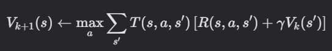
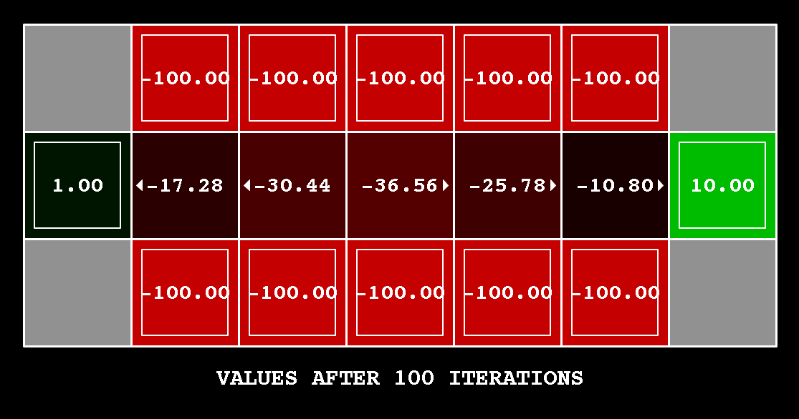
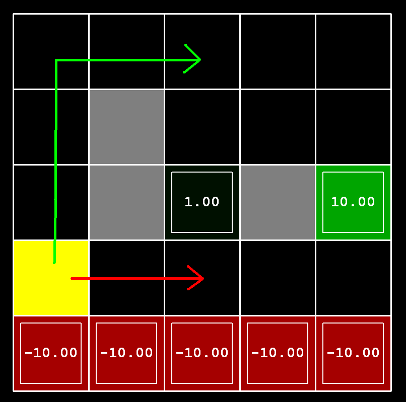
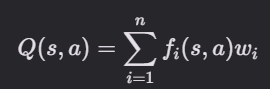
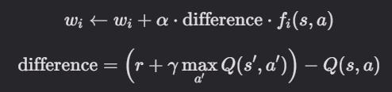

Lab4 - Aprendizaje por Refuerzo
Fecha de entrega: Sabado, 23 de mayo, 11:55 PM PT
Tabla de Contenidos
- Archivos necesarios
- Introducción
- Exploración de archivos
- MDPs
- Q1: Iteración de Valor
- Q2: Análisis de Cruce de Puente
- Q3: Políticas
- Q4: Iteración de Valor con Barrido Priorizado [Crédito Extra]
- Q5: Q-Learning
- Q6: Epsilon Greedy
- Q7: Cruce de Puente Revisitado
- Q8: Q-Learning y Pacman
- Q9: Q-Learning Aproximado
- Entrega
Archivos necesarios
En este laboratorio, deben descargar los archivos base desde este
link.Introducción
En este proyecto, implementarán iteración de valor y Q-learning. Probarán sus agentes primero en Gridworld (de clase), luego los aplicarán a un controlador de robot simulado (Crawler) y Pacman.
Como en proyectos anteriores, este proyecto incluye un autograder para que califiquen sus soluciones en su máquina. Esto se puede ejecutar en todas las preguntas con el comando:
python autograder.py
Se puede ejecutar para una pregunta particular, como q2, con:
python autograder.py -q q2
Se puede ejecutar para una prueba particular con comandos de la forma:
python autograder.py -t test_cases/q2/1-bridge-grid
Exploración de archivos
El código de este proyecto consiste en varios archivos de Python, algunos de los cuales deberán leer y entender para completar la tarea, y algunos de los cuales pueden ignorar.
Archivos que van a editar
| Archivo | Descripción |
|---|---|
| valueIterationAgents.py | Un agente de iteración de valor para resolver MDPs conocidos. |
| qlearningAgents.py | Agentes de Q-learning para Gridworld, Crawler y Pacman. |
| analysis.py | Un archivo para poner sus respuestas a las preguntas dadas en el proyecto. |
Archivos que quizás quieran revisar
| Archivo | Descripción |
|---|---|
| mdp.py | Define métodos en MDPs generales. |
| learningAgents.py | Define las clases base ValueEstimationAgent y QLearningAgent, que sus agentes extenderán. |
| util.py | Utilidades, incluyendo util.Counter, que es particularmente útil para Q-learners. |
| gridworld.py | La implementación de Gridworld. |
| featureExtractors.py | Clases para extraer características en pares (estado, acción). Usado para el agente de Q-learning aproximado (en qlearningAgents.py). |
Archivos de soporte que pueden ignorar
| Archivo | Descripción |
|---|---|
| environment.py | Clase abstracta para entornos generales de aprendizaje por refuerzo. Usado por gridworld.py. |
| graphicsGridworldDisplay.py | Visualización gráfica de Gridworld. |
| graphicsUtils.py | Utilidades de gráficos. |
| textGridworldDisplay.py | Plugin para la interfaz de texto de Gridworld. |
| crawler.py | El código del crawler y el harness de prueba. Lo ejecutarán pero no lo editarán. |
| graphicsCrawlerDisplay.py | GUI para el robot crawler. |
| autograder.py | Autograder del proyecto |
| testParser.py | Analiza archivos de prueba y solución del autograder |
| testClasses.py | Clases de prueba generales de autograding |
| test_cases/ | Directorio que contiene los casos de prueba para cada pregunta |
| reinforcementTestClasses.py | Clases de prueba de autograding específicas del Proyecto 3 |
MDPs
Para comenzar, ejecuten Gridworld en modo de control manual, que usa las teclas de flecha:
python gridworld.py -m
Verán el diseño de dos salidas de clase. El punto azul es el agente. Noten que cuando presionan arriba, el agente solo realmente se mueve hacia el norte el 80% del tiempo. ¡Así es la vida de un agente de Gridworld!
Pueden controlar muchos aspectos de la simulación. Una lista completa de opciones está disponible ejecutando:
python gridworld.py -h
El agente predeterminado se mueve aleatoriamente:
python gridworld.py -g MazeGrid
Deberían ver al agente aleatorio rebotar por la cuadrícula hasta que llegue a una salida. No es la mejor hora para un agente de IA.
Miren la salida de consola que acompaña la salida gráfica (o usen
-t
para todo texto). Se les informará sobre cada transición que el agente experimenta (para desactivar esto, usen
-q).
Como en Pacman, las posiciones están representadas por coordenadas cartesianas (x, y) y cualquier arreglo se indexa por [x][y], con 'norte' siendo la dirección de aumento de y, etc. Por defecto, la mayoría de las transiciones recibirán una recompensa de cero, aunque pueden cambiar esto con la opción de recompensa por vivir (
-r).
Q1: Iteración de Valor
Recuerden la ecuación de actualización de estado de iteración de valor:

Escriban un agente de iteración de valor en
ValueIterationAgent, que ha sido parcialmente especificado para ustedes en
valueIterationAgents.py. Su agente de iteración de valor es un planificador fuera de línea, no un agente de aprendizaje por refuerzo, y por lo tanto la opción de entrenamiento relevante es el número de iteraciones de iteración de valor que debe ejecutar (opción -i) en su fase de planificación inicial. ValueIterationAgent toma un MDP en construcción y ejecuta iteración de valor para el número especificado de iteraciones antes de que el constructor retorne.
La iteración de valor calcula estimaciones de k pasos de los valores óptimos, Vk. Además de runValueIteration, implementen los siguientes métodos para ValueIterationAgent usando Vk:
-
computeActionFromValues(state)calcula la mejor acción según la función de valor dada por self.values. -
computeQValueFromValues(state, action)devuelve el valor Q del par (estado, acción) dado por la función de valor dada por self.values.
Estas cantidades se muestran todas en la GUI: los valores son números en cuadrados, los valores Q son números en cuartos de cuadrado, y las políticas son flechas que salen de cada cuadrado.
Nota:
Un agente de política extrae una política dada una función de valor, calcula valores Q dados una función de valor, y extrae una política dada valores Q. Sin embargo, estos no son los únicos métodos que deben implementar. Revisen
ValueIterationAgent
en
valueIterationAgents.py
para otros métodos que deben sobrescribir. Específicamente, deberán implementar el constructor,
runValueIteration
, que ejecuta el algoritmo de iteración de valor.
El siguiente comando carga su agente ValueIterationAgent, que calculará una política y la ejecutará 10 veces. Presiona una tecla para ciclar a través de los valores y valores Q de todos los estados.
python gridworld.py -a value -i 100 -k 10
Pista: En el agente estándar de iteración de valor, los valores Q son típicamente no almacenados. En su lugar, son calculados sobre la marcha. Esto ahorra memoria si los valores Q no son necesarios, pero requiere que mantengan una interfaz consistente para que ValueIterationAgent herede métodos de ValueEstimationAgent. Sin embargo, el autograder requiere que almacenen los valores computados: deben retornar el valor de un estado en getValue(state), el valor Q de un par (estado, acción) en getQValue(state, action), y la mejor acción en un estado dado en getPolicy(state). Estos métodos serán llamados por el autograder cuando les den una GridWorld. ValueIterationAgent usa estos métodos también, entonces implementen estos tres métodos usando las funciones computeXXXFromValues que estén aquí a mitad de camino para completar esta pregunta.
Deberían ver que el agente de iteración de valor converge rápidamente. Compárenlo con el agente de política de extracción más ingenuo que devuelve una acción aleatoria. Presionen
ESC
para salir de la GUI en cualquier momento.
Calificación: Su agente de iteración de valor será calificado en un nuevo grid. Ejecutaremos el autograder:
python autograder.py -q q1
Q2: Análisis de Cruce de Puente
BridgeGrid es un mapa de mundo de cuadrícula con un estado terminal de baja recompensa y un estado terminal de alta recompensa separados por un estrecho "puente", a cada lado del cual hay un abismo de alta recompensa negativa. El agente comienza cerca del estado de baja recompensa. Con el descuento predeterminado de 0.9 y el ruido predeterminado de 0.2, la política óptima no cruza el puente. Cambie solo UNO de los parámetros de descuento y ruido para que la política óptima haga que el agente intente cruzar el puente. Ponga su respuesta en question2() de analysis.py. (El ruido se refiere a la frecuencia con que un agente termina en un estado sucesor no intencional cuando realiza una acción.) El valor predeterminado corresponde a:
python gridworld.py -a value -i 100 -g BridgeGrid --discount 0.9 --noise 0.2

Calificación: Verificaremos que solo haya cambiado uno de los parámetros dados, y que con este cambio, un agente de iteración de valor correcto debería cruzar el puente. Para verificar su respuesta, ejecute el autograder:
python autograder.py -q q2
Q3: Políticas
Consideren el diseño DiscountGrid, mostrado a continuación. Esta cuadrícula tiene dos estados terminales con recompensa positiva (en la fila del medio), una salida cercana con recompensa +1 y una salida distante con recompensa +10. La fila inferior de la cuadrícula consiste en estados terminales con recompensa negativa (mostrados en rojo); cada estado en esta región de "acantilado" tiene recompensa -10. El estado inicial es el cuadrado amarillo. Distinguimos entre dos tipos de caminos: (1) caminos que "arriesgan el acantilado" y viajan cerca de la fila inferior de la cuadrícula; estos caminos son más cortos pero arriesgan ganar una gran recompensa negativa, y están representados por la flecha roja en la figura a continuación. (2) caminos que "evitan el acantilado" y viajan a lo largo del borde superior de la cuadrícula. Estos caminos son más largos pero es menos probable que incurran en grandes recompensas negativas. Estos caminos están representados por la flecha verde en la figura a continuación.

En esta pregunta, elegirán configuraciones de los parámetros de descuento, ruido y recompensa por vivir para este MDP para producir políticas óptimas de varios tipos diferentes. Su configuración de los valores de parámetros para cada parte debe tener la propiedad de que, si su agente siguió su política óptima sin estar sujeto a ningún ruido, exhibiría el comportamiento dado. Si un comportamiento particular no se logra para ninguna configuración de los parámetros, afirme que la política es imposible devolviendo la cadena 'NOT POSSIBLE'.
Aquí están los tipos de política óptima que deben intentar producir:
- Preferir la salida cercana (+1), arriesgando el acantilado (-10)
- Preferir la salida cercana (+1), pero evitando el acantilado (-10)
- Preferir la salida distante (+10), arriesgando el acantilado (-10)
- Preferir la salida distante (+10), evitando el acantilado (-10)
- Evitar ambas salidas y el acantilado (de modo que un episodio nunca termine)
Para ver qué comportamiento termina un conjunto de números, ejecute el siguiente comando para ver una GUI:
python gridworld.py -g DiscountGrid -a value --discount [YOUR_DISCOUNT] --noise [YOUR_NOISE] --livingReward [YOUR_LIVING_REWARD]
Para verificar sus respuestas, ejecute el autograder:
python autograder.py -q q3
question3a()
hasta
question3e()
deben devolver cada una una tupla de 3 elementos de (descuento, ruido, recompensa por vivir) en analysis.py.
Calificación: Verificaremos que la política deseada se devuelva en cada caso.
Q4: Iteración de Valor con Barrido Priorizado [Crédito Extra]
Esta pregunta es crédito extra. Planeamos priorizar a los estudiantes que tengan preguntas sobre partes requeridas de este proyecto en las Horas de Oficina.
Ahora implementarán
PrioritizedSweepingValueIterationAgent, que ha sido parcialmente especificado para ustedes en valueIterationAgents.py.
El barrido priorizado intenta enfocar las actualizaciones de valores de estado de maneras que probablemente cambien la política.
Para este proyecto, implementarán una versión simplificada del algoritmo estándar de barrido priorizado, que se describe en este paper. Hemos adaptado este algoritmo para nuestra configuración. Primero, definimos los predecesores de un estado s como todos los estados que tienen una probabilidad no cero de alcanzar s al tomar alguna acción a. Además, theta, que se pasa como parámetro, representará nuestra tolerancia al error al decidir si actualizar el valor de un estado. Aquí está el algoritmo que deben seguir en su implementación:
- Calcular predecesores de todos los estados.
- Inicializar una cola de prioridad vacía.
- Para cada estado no terminal s, hacer: (nota: para hacer que el autograder funcione para esta pregunta, debe iterar sobre estados en el orden devuelto por self.mdp.getStates())
- Encuentre el valor absoluto de la diferencia entre el valor actual de s en self.values y el valor Q más alto en todas las acciones posibles desde s (esto representa cuál debería ser el valor); llame a este número diff. NO actualice self.values[s] en este paso.
- Empuje s en la cola de prioridad con prioridad -diff (note que esto es negativo). Usamos un negativo porque la cola de prioridad es un heap mínimo, pero queremos priorizar la actualización de estados que tienen un error mayor.
- Para iteración en 0, 1, 2, ..., self.iterations - 1, hacer:
- Si la cola de prioridad está vacía, entonces terminar.
- Sacar un estado s de la cola de prioridad.
- Actualizar el valor de s (si no es un estado terminal) en self.values.
- Para cada predecesor p de s, hacer:
- Encuentre el valor absoluto de la diferencia entre el valor actual de p en self.values y el valor Q más alto en todas las acciones posibles desde p (esto representa cuál debería ser el valor); llame a este número diff. NO actualice self.values[p] en este paso.
- Si diff > theta, empuje p en la cola de prioridad con prioridad -diff (note que esto es negativo), siempre que no exista ya en la cola de prioridad con prioridad igual o menor. Como antes, usamos un negativo porque la cola de prioridad es un heap mínimo, pero queremos priorizar la actualización de estados que tienen un error mayor.
Un par de notas importantes sobre la implementación:
- Cuando calculen predecesores de un estado, asegúrense de almacenarlos en un conjunto, no en una lista, para evitar duplicados.
-
Por favor use
util.PriorityQueueen su implementación. El método update en esta clase probablemente será útil; mire su documentación.
Para probar su implementación, ejecute el autograder. Debería tomar aproximadamente 1 segundo ejecutarse. Si toma mucho más, puede encontrar problemas más adelante en el proyecto, así que haga su implementación más eficiente ahora.
python autograder.py -q q4
Puede ejecutar el PrioritizedSweepingValueIterationAgent en Gridworld usando el siguiente comando.
python gridworld.py -a priosweepvalue -i 1000
Calificación: Su agente de iteración de valor con barrido priorizado será calificado en una nueva cuadrícula. Verificaremos sus valores, valores Q y políticas después de números fijos de iteraciones y en convergencia (por ejemplo, después de 1000 iteraciones).
Q5: Q-Learning
Noten que su agente de iteración de valor no aprende realmente de la experiencia. Más bien, reflexiona sobre su modelo MDP para llegar a una política completa antes de interactuar con un entorno real. Cuando interactúa con el entorno, simplemente sigue la política precalculada (por ejemplo, se convierte en un agente reflejo). Esta distinción puede ser sutil en un entorno simulado como Gridworld, pero es muy importante en el mundo real, donde el MDP real no está disponible.
Ahora escribirán un agente de Q-learning, que hace muy poco en la construcción, pero en su lugar aprende por ensayo y error de las interacciones con el entorno a través de su método
update(state, action, nextState, reward). Un stub de un Q-learner está especificado en QLearningAgent en qlearningAgents.py, y puede seleccionarlo con la opción '-a q'. Para esta pregunta, debe implementar los métodos update, computeValueFromQValues, getQValue y computeActionFromQValues.
Con la actualización de Q-learning en su lugar, puede ver a su Q-learner aprender bajo control manual, usando el teclado:
python gridworld.py -a q -k 5 -m
Recuerden que
-k
controlará el número de episodios que su agente tiene para aprender. Vean cómo el agente aprende sobre el estado en el que acaba de estar, no en el que se mueve, y "deja el aprendizaje en su estela". Pista: para ayudar con la depuración, puede desactivar el ruido usando el parámetro --noise 0.0 (aunque esto obviamente hace que Q-learning sea menos interesante). Si guían manualmente a Pacman al norte y luego al este a lo largo del camino óptimo durante cuatro episodios, deberían ver los siguientes valores Q:

Calificación: Ejecutaremos su agente de Q-learning y verificaremos que aprenda los mismos valores Q y política que nuestra implementación de referencia cuando a cada uno se le presente el mismo conjunto de ejemplos. Para calificar su implementación, ejecute el autograder:
python autograder.py -q q5
Q6: Epsilon Greedy
Complete su agente de Q-learning implementando selección de acción epsilon-greedy en
getAction, lo que significa que elige acciones aleatorias una fracción epsilon del tiempo, y sigue sus mejores valores Q actuales de lo contrario. Tenga en cuenta que elegir una acción aleatoria puede resultar en elegir la mejor acción, es decir, no debe elegir una acción subóptima aleatoria, sino cualquier acción legal aleatoria.
Puede elegir un elemento de una lista uniformemente al azar llamando a la función
random.choice. Puede simular una variable binaria con probabilidad p de éxito usando
util.flipCoin(p), que devuelve True con probabilidad p y False con probabilidad 1-p.
Después de implementar el método getAction, observe el siguiente comportamiento del agente en GridWorld (con epsilon = 0.3).
python gridworld.py -a q -k 100
Sus valores Q finales deberían parecerse a los de su agente de iteración de valor, especialmente a lo largo de caminos bien transitados. Sin embargo, sus rendimientos promedio serán más bajos que los que predicen los valores Q debido a las acciones aleatorias y la fase de aprendizaje inicial.
También puede observar las siguientes simulaciones para diferentes valores de epsilon. ¿El comportamiento del agente coincide con lo que esperan?
python gridworld.py -a q -k 100 --noise 0.0 -e 0.1
python gridworld.py -a q -k 100 --noise 0.0 -e 0.9
Para probar su implementación, ejecute el autograder:
python autograder.py -q q6
Sin código adicional, ahora debería poder ejecutar un robot crawler de Q-learning:
python crawler.py
Si esto no funciona, probablemente haya escrito algún código demasiado específico para el problema de GridWorld y debería hacerlo más general para todos los MDPs.
Esto invocará el robot rastrero de clase usando su Q-learner. Juegue con los varios parámetros de aprendizaje para ver cómo afectan las políticas y acciones del agente. Tenga en cuenta que el retraso de pasos es un parámetro de la simulación, mientras que la tasa de aprendizaje y epsilon son parámetros de su algoritmo de aprendizaje, y el factor de descuento es una propiedad del entorno.
Q7: Cruce de Puente Revisitado
Primero, entrene un Q-learner completamente aleatorio con la tasa de aprendizaje predeterminada en el BridgeGrid sin ruido durante 50 episodios y observe si encuentra la política óptima.
python gridworld.py -a q -k 50 -n 0 -g BridgeGrid -e 1
Ahora intente el mismo experimento con un epsilon de 0. ¿Hay un epsilon y una tasa de aprendizaje para los cuales es muy probable (mayor al 99%) que la política óptima se aprenda después de 50 iteraciones? question8() en analysis.py debe devolver BIEN una tupla de 2 elementos de (epsilon, tasa de aprendizaje) O la cadena 'NOT POSSIBLE' si no hay ninguno. Epsilon se controla por -e, tasa de aprendizaje por -l.
Para calificar su respuesta, ejecute el autograder:
python autograder.py -q q7
Q8: Q-Learning y Pacman
Es hora de jugar algo de Pacman! Pacman jugará juegos en dos fases. En la primera fase, entrenamiento, Pacman comenzará a aprender sobre los valores de posiciones y acciones. Como toma mucho tiempo aprender valores Q precisos incluso para cuadrículas pequeñas, los juegos de entrenamiento de Pacman se ejecutan en modo silencioso por defecto, sin GUI (o consola). Una vez que el entrenamiento de Pacman esté completo, entrará en modo de prueba. Cuando está probando, self.epsilon y self.alpha de Pacman se establecerán en 0.0, deteniendo efectivamente Q-learning y deshabilitando la exploración, para permitir que Pacman explote su política aprendida. Los juegos de prueba se muestran en la GUI por defecto. Sin ningún cambio de código, debería poder ejecutar Q-learning Pacman para cuadrículas muy pequeñas de la siguiente manera:
python pacman.py -p PacmanQAgent -x 2000 -n 2010 -l smallGrid
Tenga en cuenta que
PacmanQAgent
ya está definido para usted en términos del QLearningAgent que ya ha escrito. PacmanQAgent solo es diferente en que tiene parámetros de aprendizaje predeterminados que son más efectivos para el problema de Pacman (epsilon=0.05, alpha=0.2, gamma=0.8). Recibirá crédito completo para esta pregunta si el comando anterior funciona sin excepciones y su agente gana al menos el 80% del tiempo. El autograder ejecutará 100 juegos de prueba después de los 2000 juegos de entrenamiento.
Para calificar su respuesta, ejecute:
python autograder.py -q q8
python pacman.py -p PacmanQAgent -n 10 -l smallGrid -a numTraining=10
Durante el entrenamiento, verá salida cada 100 juegos con estadísticas sobre cómo le está yendo a Pacman. Epsilon es positivo durante el entrenamiento, por lo que Pacman jugará mal incluso después de haber aprendido una buena política: esto es porque ocasionalmente hace un movimiento exploratorio aleatorio en un fantasma. Como punto de referencia, debería tomar entre 1000 y 1400 juegos antes de que las recompensas de Pacman para un segmento de 100 episodios se vuelvan positivas, reflejando que ha comenzado a ganar más que a perder. Al final del entrenamiento, debería permanecer positivo y ser bastante alto (entre 100 y 350).
Asegúrese de entender qué está pasando aquí: el estado MDP es la configuración exacta del tablero que enfrenta Pacman, con las transiciones ahora complejas que describen un ply completo de cambio a ese estado. Las configuraciones de juego intermedias en las que Pacman se ha movido pero los fantasmas no han respondido no son estados MDP, sino que están agrupados en las transiciones.
Una vez que Pacman haya terminado de entrenar, debería ganar muy confiablemente en juegos de prueba (al menos el 90% del tiempo), ya que ahora está explotando su política aprendida.
Sin embargo, encontrará que entrenar el mismo agente en mediumGrid aparentemente simple no funciona bien. En nuestra implementación, las recompensas promedio de entrenamiento de Pacman permanecen negativas durante todo el entrenamiento. En el momento de la prueba, juega mal, probablemente perdiendo todos sus juegos de prueba. El entrenamiento también tomará mucho tiempo, a pesar de su ineficacia.
Pacman no logra ganar en diseños más grandes porque cada configuración de tablero es un estado separado con valores Q separados. No tiene forma de generalizar que correr hacia un fantasma es malo para todas las posiciones. Obviamente, este enfoque no escalará.
Q9: Q-Learning Aproximado
Implemente un agente de Q-learning aproximado que aprenda pesos para características de estados, donde muchos estados pueden compartir las mismas características. Escriba su implementación en la clase
ApproximateQAgent
en
qlearningAgents.py, que es una subclase de PacmanQAgent.
La función Q aproximada toma la siguiente forma:

donde cada peso wi está asociado con una característica particular fi(s,a). En su código, debe implementar el vector de pesos como un diccionario que mapea características (que los extractores de características devolverán) a valores de peso. Actualizará sus vectores de peso de manera similar a cómo actualizó los valores Q:

Tenga en cuenta que el término de diferencia es el mismo que en el Q-learning normal, y r es la recompensa experimentada.
Por defecto, ApproximateQAgent usa el
IdentityExtractor, que asigna una sola característica a cada par (estado, acción). Con este extractor de características, su agente de Q-learning aproximado debería funcionar de manera idéntica a PacmanQAgent. Puede probar esto con el siguiente comando:
python pacman.py -p ApproximateQAgent -x 2000 -n 2010 -l smallGrid
Una vez que esté seguro de que su aprendiz aproximado funciona correctamente con las características de identidad, ejecute su agente de Q-learning aproximado con nuestro extractor de características personalizado, que puede aprender a ganar con facilidad:
python pacman.py -p ApproximateQAgent -a extractor=SimpleExtractor -x 50 -n 60 -l mediumGrid
Incluso diseños mucho más grandes no deberían ser un problema para su ApproximateQAgent (advertencia: esto puede tomar unos minutos para entrenar):
python pacman.py -p ApproximateQAgent -a extractor=SimpleExtractor -x 50 -n 60 -l mediumClassic
Si no tiene errores, su agente de Q-learning aproximado debería ganar casi siempre con estas características simples, incluso con solo 50 juegos de entrenamiento.
Calificación: Ejecutaremos su agente de Q-learning aproximado y verificaremos que aprenda los mismos valores Q y pesos de características que nuestra implementación de referencia cuando a cada uno se le presente el mismo conjunto de ejemplos. Para calificar su implementación, ejecute el autograder:
python autograder.py -q q9
¡Felicitaciones! ¡Tiene un agente Pacman que aprende!
Entrega
El entregable será un archivo zip con el número de laboratorio seguido de tu ID (ejemplo: Lab4-20123456.zip) que contenga todos los archivos del laboratorio completados exitosamente. No olvides verificar que completaste el laboratorio correctamente usando la herramienta de autograder proporcionada para este laboratorio.